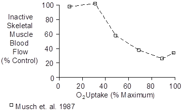
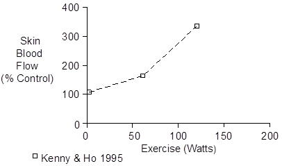
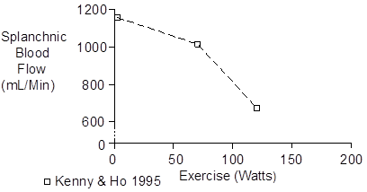
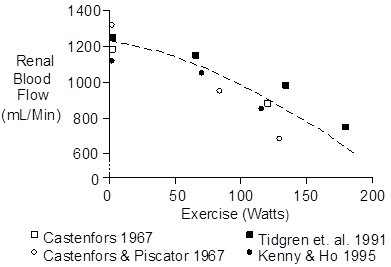
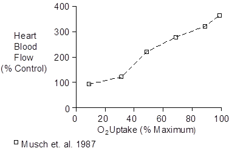
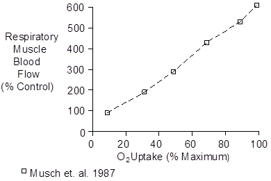
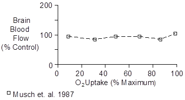

Exercise > Regional Blood Flow
During exercise, blood flow is increased to the working muscle, the respiratory muscles, the left and right heart and the skin. Blood flow is decreased to inactive muscle, the gut and kidney.
 Organ Blood Flows At Rest
Organ Blood Flows At Rest
Williams and Leggett (1989) suggest the following values for a 35 year old male. I’ve scaled them to a 75 kG body weight and a cardiac output of 5500 mL/Min. Numbers in brackets are not summed in calculating the totals.
| Organ | % Cardiac | Flow |
| Output | (mL/Min) | |
| Adipose Tissue | 5 | 275 |
| Adrenal Glands | 0.2 | 11 |
| Bone | 5 | 275 |
| Brain | 12 | 660 |
| GI Tract | 15 | 825 |
| Stomach | [ 1 ] | [ 55 ] |
| Small Intestine | [ 55 ] | [ 550 ] |
| Colon | [ 4 ] | [ 220 ] |
| Heart | 4 | 220 |
| Kidneys | 19 | 1045 |
| Liver | [ 25.5 ] | [ 1403 ] |
| Portal Vein | [ 19 ] | [ 1045 ] |
| Hepatic Artery | 6.5 | 358 |
| Lungs | 2.5 | 138 |
| Pancreas | 1 | 55 |
| Skeletal Muscle | 17 | 935 |
| Skin | 5 | 275 |
| Spleen | 3 | 165 |
| Thyroid | 1.5 | 82 |
| Other | 3.3 | 181 |
| --------------- | -------- | -------- |
| Total | 100 | 5500 |
Animal Studies
There’s not a lot of human data on regional blood flow in exercise, due to the need for invasive protocols. So in some of the following sections, I’ve taken the canine treadmill data of Musch et. al. (1987) and presented it as % of control.
Skeletal Muscle - Working
Jorfeldt and Wahren (1971) measured blood flow to the legs during bicycle ergometer exercise. Data for the whole body are tabulated directly below.
| Exercise | Heart | O2 | Efficiency |
| Intensity | Rate | Uptake | (%) |
| (W) | (/Min) | (mL/Min) | |
| Rest | 56 | 243 | - |
| 65 | 85 | 1047 | 23.9 |
| 130 | 121 | 1817 | 24.3 |
| 196 | 152 | 2552 | 24.8 |
Jorfeldt and Wahren’s data for the two legs are tabulated below.
| Exercise | Blood | O2 | Efficiency | A-V |
| Intensity | Flow | Uptake | (%) | Difference |
| (W) | (mL/Min) | (mL/Min) | (mL/mL) | |
| Rest | 840 | 58 | - | 0.070 |
| 65 | 4900 | 628 | 34.0 | 0.128 |
| 130 | 8520 | 1184 | 34.3 | 0.139 |
| 196 | 11140 | 1716 | 34.7 | 0.153 |
Cronestrand et. al. (1971) had similar results.
Skeletal Muscle - Inactive

Skin

See also Temperature Regulation page.
GI Tract And Liver

Wade et. al. (1956) measured splanchnic blood flow and blood volume at rest and during exercise estimated to be 34 watts. The response of the splanchnic circulation in 3 subjects is tabluated below. Blood volume was 5730 mL. O2 uptake was 230 mL/Min at rest and 718 mL/Min during exercise.
| Blood | Blood | O2 | A-V | |
| Flow | Volume | Uptake | Difference | |
| (mL/Min) | (mL) | (mL/Min) | (mL/mL) | |
| Rest | 1570 | 1020 | 56 | 0.037 |
| Exercise | 1150 | 680 | 49 | 0.043 |
Kidney

Heart

Respiratory Muscle

Brain

References
Castenfors, J. Renal clearances and urinary sodium and potassium excretion during supine exercise in normal subjects. Acta Physiol. Scand. 70:207-214, 1967.
Castenfors, J. and M. Piscator. Renal hemodynamics, urine flow and urinary protein excretion during exercise in supine position at different loads. Acta Med. Scand. Suppl. 472:231-244, 1967.
Cronestrand, R., S. Ekeström and A. Holmgren. Rheologic and metabolic studies in the vascular bed of the leg after arterial reconstruction, at rest and during exercise. Scand. J. Thor. Cardiovasc. Surg. 5:51-60, 1971.
Jorfeldt, L. and J. Wahren. Leg blood flow during exercise in man. Clin. Sci. 41:459-473, 1971.
Kenny, W.L. and C.-W. Ho. Age alters regional distribution of blood flow during moderate-intensity exercise. J. Appl. Physiol. 79:1112-1119, 1995.
Musch, T.I., D.B. Friedman, K.H. Pitetti, G.C. Haidet, J. Stray-Gundersen, J.H. Mitchell and G.A. Ordway. Regional distribution of blood flow of dogs during graded dynamic exercise. J. Appl. Physiol. 63:2269-2277, 1987.
Tidgren, B., P. Hjemdahl, E. Theodorsson and J. Nussberger. Renal neurohormal and vascular responses to dynamic exercise in humans. J. Appl. Physiol. 70:2279-2286, 1991.
Wade, O.L., B. Combes, A.W. Childs, H.O. Wheeler, A. Cournand and S.E. Bradley. The effect of exercise on the splanchnic blood flow and splanchnic blood volume in normal man. Clin. Sci. 15:457-463, 1956.
Williams, L.R. and R.W. Leggett. Reference values for resting blood flow to organs of man. Clin. Phys. Physiol. Meas. 10:187-217, 1989.